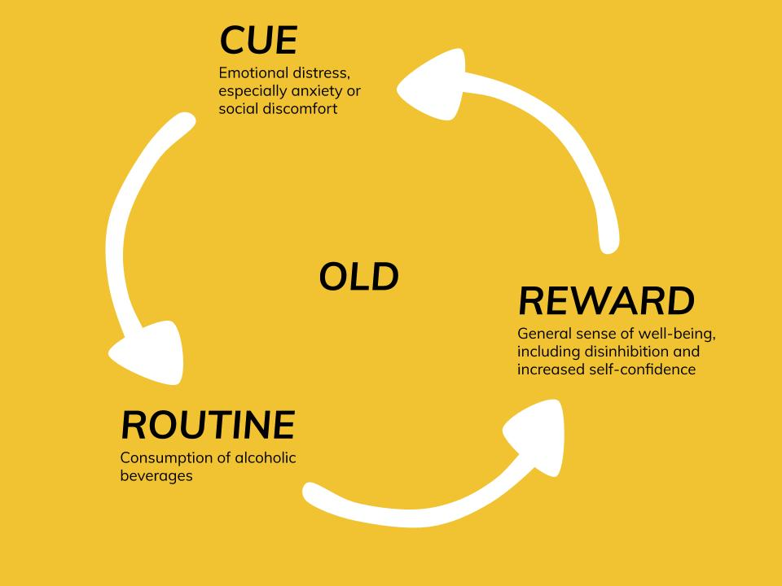
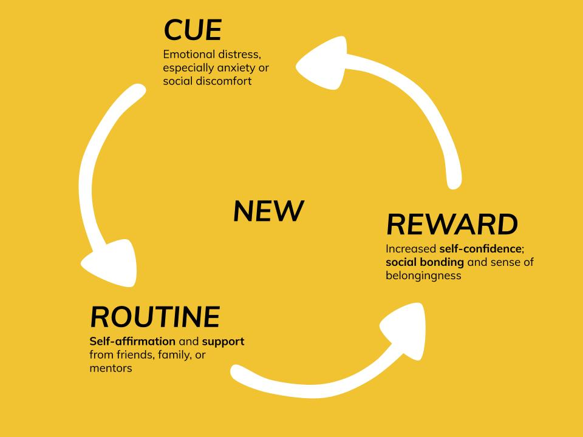

scentifically curated solutions to help you break your bad habits


Your Five-Step Plan
Gain self-awareness: use a phone calendar or small notecard, and make a small tick for each time you consume alcohol. Take note of your surroundings, the people around you, and your feelings.
Eliminate triggers: stop buying alcohol for personal use. If you feel pressure to drink for social reasons, try to attend events where no alcohol will be served, and avoid those who encourage you to drink.
Build your new habit: whenever you feel cued to drink alcohol, reach out to and engage with friends and family to faciliate bonding and self-confidence. Practice positive self-affirmation.
Get support: join a self-help group, such as Alcoholics Anonymous, or seek out therapy.
Reflect: if you happen to relapse into old habits, go back to step one. Identify the people, places, or emotions that triggered the relapse, and make a plan for how you will continue to eliminate triggers, practice your new habit, and find support.
Want to read some articles? Here are some of the top-cited references related to your habit:
Gain self-awareness: use a phone calendar or small notecard, and make a small tick for each time you consume bite your nails, or pick at your hair/skin. Take note of your surroundings, the people around you, and your feelings.
Eliminate triggers: keep your nails short. If you pick/bite in your sleep, consider wearing gloves to bed.
Build your new habit: whenever you feel cued to pick or bite, engage in non-damaging physical stimulation, such as rapping your knuckles or rubbing your arms/legs. Occupy your hands with another task, such as coloring, doing work, cooking, or cleaning.
Get support: enlist family and friends to remind you whenver you start picking or biting.
Reflect: if you happen to relapse into old habits, go back to step one. Identify the people, places, or emotions that triggered the relapse, and make a plan for how you will continue to eliminate triggers, practice your new habit, and find support.
Want to read some articles? Here are some of the top-cited references related to your habit:
Gain self-awareness: use a phone calendar or small notecard, and make a small tick for each time you find yourself with an urge to smoke. Take note of your surroundings, the people around you, and your feelings.
Eliminate triggers: stop buying, or slowly reduce the number of cigarettes you buy. Avoid stores that sell cigarettes, and avoid friends who smoke or encourage you to smoke.
Build your new habit: whenever you feel anxiety or a craving to smoke, engage in an alternative energizing routine, such as drinking coffee or exercising.
Get support: when a craving to smoke arises, seek out social interaction with friends or family for an additional mood boost.
Reflect: if you happen to relapse into old habits, go back to step one. Identify the people, places, or emotions that triggered the relapse, and make a plan for how you will continue to eliminate triggers, practice your new habit, and find support.
Want to read some articles? Here are some of the top-cited references related to your habit:
Gain self-awareness: use a phone calendar or small notecard, and make a small tick for each time you find yourself stress eating, or eating for any other reason than physical hunger. Take note of your surroundings, the people around you, and your feelings.
Eliminate triggers: if specific foods tend to trigger binges, don't buy them or store them in the house. Give away triggering foods to family/coworkers, and politely but firmly refuse any food gifts.
Build your new habit: whenever you feel cued overeat, remove yourself from the current environment. Go out for a quick walk, or some other type of physical activity; alternatively, go chat with family, friends, or a coworker.
Get support: enlist family and friends and use them as a a way to remove yourself from triggering food situations. Seek out social interactions in time of stress.
Reflect: if you happen to relapse into old habits, go back to step one. Identify the people, places, or emotions that triggered the relapse, and make a plan for how you will continue to eliminate triggers, practice your new habit, and find support.
Want to read some articles? Here are some of the top-cited references related to your habit:
Gain self-awareness: use a phone calendar or small notecard, and make a small tick for each time you drink, or feel a craving for, soda or another caffeinated drink. Take note of your surroundings, the people around you, and your feelings.
Eliminate triggers: Stop buying sugary or caffeinated drinks. If possible, avoid vending machines or the work fridge by bringing your own non-caffeinated, sugar-free drink, such as plain/sparking water or fruit juice.
Build your new habit: whenever you feel a craving for a quick energy boost, try taking a quick nap. If this is not possible, make sure to have a healthy sweet snack, such as fruit or a granola bar, on hand. Eat your healthy snack instead of reaching for a caffeinated drink.
Get support: tell family and friends about your goals. If others tend to buy caffeinated/sugary drinks for you, ask them to stop. When ordering food or drinks as a group, suggest water over sugary drinks.
Reflect: if you happen to relapse into old habits, go back to step one. Identify the people, places, or emotions that triggered the relapse, and make a plan for how you will continue to eliminate triggers, practice your new habit, and find support.
Want to read some articles? Here are some of the top-cited references related to your habit:
Gain self-awareness: use a phone calendar or small notecard, and track when you start/stop watching TV each day. Take note of your surroundings, the people around you, and your feelings when you start watching TV.
Eliminate triggers: if your TV is currently in your bedroom or a work space, move it to a less distracting and less accessible space. Consider getting rid of your TV entirely. If you tend to watch on your phone/laptop, use device settings to limit screentime. Consider deleting watch apps, or cancelling your subscription entirely.
Build your new habit: whenever you want to relax by watching TV, find an alternative activity that is both stimulating and relaxing. Examples include meditation, arts and crafts, puzzles, writing/journaling, or learning more about a hobby.
Get support: tell family and friends about your goals. If you tend to watch TV with others, suggest alternative activities: going out for a walk, playing a board game, etc.
Reflect: if you happen to relapse into old habits, go back to step one. Identify the people, places, or emotions that triggered the relapse, and make a plan for how you will continue to eliminate triggers, practice your new habit, and find support.
Want to read some articles? Here are some of the top-cited references related to your habit:
Gain self-awareness: use a phone calendar or small notecard, and track whenever you feel the urge to put off an important task. Take note of your surroundings, the people around you, and your feelings.
Eliminate triggers: remove whatever you use to procrastinate. If it's your phone, put it in another room. If it's TV, move somwhere where the TV is not visible. If it's eating, have a quick snack before you start your task, then put away the food for good. However you procrastinate, make sure the object of procrastination is out of sight and out of mind.
Build your new habit: whenever you feel like a task is too difficult or unmanageable, try breaking the task down into smaller, more manageable steps. Set a strict deadline for each of these steps, and arrange for small breaks or rewards after the completion of each step.
Get support: have family or friends gently remind you if they see you procrastinating. If your procrastination is related to school/work, try arranging a study/work session with coworkers or classmates to motivate yourself.
Reflect: if you happen to relapse into old habits, go back to step one. Identify the people, places, or emotions that triggered the relapse, and make a plan for how you will continue to eliminate triggers, practice your new habit, and find support.
Want to read some articles? Here are some of the top-cited references related to your habit:
Gain self-awareness: use a phone calendar or small notecard, and track which days of the week you tend to sleep in on, and how long you sleep in for. Take note of what time you went to bed, what happened the day before, and how you felt before/after waking up.
Eliminate triggers: make sleeping in less comfortable. For example, consider putting your alarm out of reach, forcing you to get up to turn it off. Alternatively, surround yourself with reminders to get up, such as putting your work/gym/school clothes right next to your bed. Make sure you go to bed early enough as well.
Build your new habit: whenever you feel like sleeping in, force yourself to get up instead, using the trigger-eliminating methods from step 2. Then, immediately begin an energizing morning routine. Try showering, having coffee, eating a high-energy and healthy breakfast, and engaging in some brisk exercise.
Get support: if you live with others, consider having them help wake you up in the morning. Find a morning workout buddy or someone to just motivate you to continue getting up early.
Reflect: if you happen to relapse into old habits, go back to step one. Identify the people, places, or emotions that triggered the relapse, and make a plan for how you will continue to eliminate triggers, practice your new habit, and find support.
Want to read some articles? Here are some of the top-cited references related to your habit:
Gain self-awareness: use a physical calendar or a small notecard (or your phone's built-in screentime app), make a log of how long and when you're using your phone. Whenever you feel tempted to check your phone, take note of the time, the environment, and who you're with.
Eliminate triggers: move your phone somewhere it's not easily accessible, and place it face-down. Turn off all notifications, and consider deleting apps that are particularly tempting to you. You may also want to try a screen time app that automatically locks your phone.
Build your new habit: whenever you feel tempted to check your phone, place it somewhere out of reach, or turn it off. Find some other activity to focus on, such as reading or having a quick chat with family and friends face-to-face.
Get support: ask family or friends to gently remind you if they see you overusing your phone. Find fun activities to do with others that don't involve your phone or social media, such as a board game, outdoor exercise, arts and crafts, etc.
Reflect: if you happen to relapse into old habits, go back to step one. Identify the people, places, or emotions that triggered the relapse, and make a plan for how you will continue to eliminate triggers, practice your new habit, and find support.
Want to read some articles? Here are some of the top-cited references related to your habit:
Gain self-awareness: use a physical or digital notepad to track your sleep habits. Keep track of when you go to sleep, your bedtime routine, and when you wake up in the morning.
Eliminate triggers: make your bedroom and before-bed routine as restful as possible. Stop consuming caffeine after 2 PM. Avoid blue light, including phones, TVs, and laptops, which can make you feel more awake. Move any distractions such as a TV or phone out of your room at night.
Build your new habit: whenever you feel tempted to stay up late, make a quick list of tasks or activities that you'll complete tomorrow. Then set this list aside and engage in restful activities such as reading or meditation. Follow this routine consistently before bedtime.
Get support: ask family or roommates to support you in your earlier bedtime, especially by being quiet before and during your bedtime. If you watch TV with others or engage in other screen-focused behaviors before sleep, find alternative, calming group activities like arts and crafts, puzzles, yoga, etc.
Reflect: if you happen to relapse into old habits, go back to step one. Identify the people, places, or emotions that triggered the relapse, and make a plan for how you will continue to eliminate triggers, practice your new habit, and find support.
Want to read some articles? Here are some of the top-cited references related to your habit:
Gain self-awareness: use your bank app on your phone, or some other tracking software, to keep track of your purchases. Take note of what you're buying, and where/when, as well as how much you're spending per week/month. Small purcahses may add up and suprise you.
Eliminate triggers: don't bring cash/your credit card with you unless you know you need to make a necessary purchase. Similarly, avoid going to shopping areas unless you're making an essential purchase, such as for groceries.
Build your new habit: plan all your purchases ahead of time. Allocate money for necessary expenses and bills, then budget some discretionary spendings. Each week/month, make a list of non-essential items you'd like to buy, and pick one or a few of the most desireable items to purchase. Avoid any unnecessary purchases outside of these using the methods in step 2.
Get support: ask family and friends to support you by not inviting you out to shopping excursions, and not flaunting their new purchases in front of you. Find less expensive ways to enertain yourself and socialize, such as having coffee with friends, going on a walk/jog, etc.
Reflect: if you happen to relapse into old habits, go back to step one. Identify the people, places, or emotions that triggered the relapse, and make a plan for how you will continue to eliminate triggers, practice your new habit, and find support.
Want to read some articles? Here are some of the top-cited references related to your habit:
Gain self-awareness: keep track of free time you have during the day that you could potentially use to exercise. If you already exercise, but want to increase your activity level, make note of how you're exercising, how long your workouts are, and how you feel before/after. You may also want to invest in a step tracker or fitness band.
Eliminate triggers: try to get rid of whatever prevents you from exercising. If it's watching TV/using your phone, move those items out of your sight. If it's work/school, set strict times for when you'll complete work, and avoid overworking outside of those times.
Build your new habit: set a specific time of day for your exercise routine, based on times you identified in step 1. Start off with short, low-intensity exercises like walking or yoga, and slowly build up to more strenuous workouts involving weights, cardio, or strength exercises.
Get support: find exercise activities to do with friends. These could include team sports like basketball/soccer, or simply group activities like skating, walking, or yoga.
Reflect: if you happen to relapse into old habits, go back to step one. Identify the people, places, or emotions that triggered the relapse, and make a plan for how you will continue to eliminate triggers, practice your new habit, and find support.
Want to read some articles? Here are some of the top-cited references related to your habit:
Gain self-awareness: keep track of what and when you're eating throughout the day. whenever you miss a meal, make note of it on your phone or in a physical notecard. You may want to use a food-tracking app such as MyFitnessPal or Noom.
Eliminate triggers: avoid scheduling meetings or other work engagements during mealtimes as much as possible. Bring a snack or meal with you to work/school to avoid the temptation of skipping meals when things get busy.
Build your new habit: set aside a specific time once a day/week to prepare your meals. Use this time to pack and prepare for your future snacks or meals. If it's not feasible to sit down for a meal, invest in high-energy, healthy meal replacement bars or shakes.
Get support: ask coworkers or peers to avoid scheduling meetings or other work engagements during mealtimes. Alternatively, try meeting with people over a meal, such as a lunchtime meeting at a restaurant. If you live with someone who cooks regularly, consider asking them to teach you, or to prepare a portion for you as well.
Reflect: if you happen to relapse into old habits, go back to step one. Identify the people, places, or emotions that triggered the relapse, and make a plan for how you will continue to eliminate triggers, practice your new habit, and find support.
Want to read some articles? Here are some of the top-cited references related to your habit: